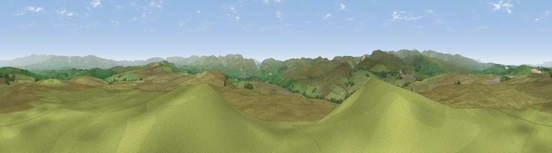

Long Scar Pike [Coalpit Hill]
#6153 in England · top 24% of its area beats it · near OrtonThe view, rendered

A 360° render of this exact spot computed from the terrain model, tree cover and land cover — summer colours, afternoon light, calibrated against photographs of famous viewpoints. Real trees, hedges and buildings will differ in detail.
The panorama
Grey silhouette: terrain skyline in each direction (720 bearings, Earth curvature and refraction included). Dashed green: skyline with trees (+15 m) and buildings (+8 m) as obstacles. Blue strip: how far the ground is visible on each bearing.
Where the view opens
Wedge length = distance to the farthest visible ground on that bearing (vegetation-aware). Rings at 10, 25 and 50 km.
What fills the view
97% grassland · 2% woodland
Angular shares of the visible panorama (visual magnitude), not map area. Landscape diversity 0.07 (0–1 Shannon).
Key numbers
More beautiful places nearby
The staircase of upgrades: each row has a higher view potential than everything closer. Driving times are estimates from straight-line distance, calibrated against real road routing — check an actual route before setting out.
| Place | Direction | Drive | Score |
|---|---|---|---|
| Long Fell | WSW · 4 km | ~10 min | 72.4 |
| Viewpoint near Sadgill | WSW · 7 km | ~14 min | 73.1 |
| Viewpoint near Sadgill | WSW · 8 km | ~15 min | 75.7 |
| Ashstead Fell | SSW · 9 km | ~17 min | 76.3 |
| Castle Fell | SSW · 10 km | ~19 min | 77.2 |
| Viewpoint near Garnett Bridge | SW · 10 km | ~19 min | 77.6 |
| Viewpoint near Bampton | WNW · 13 km | ~23 min | 77.8 |
| Viewpoint near Bampton | WNW · 13 km | ~24 min | 80.4 |
54.49157, -2.62944 · source: dobih hill · position refined by local search. Computed location — check access rights before visiting.